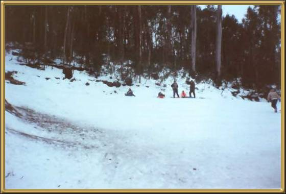

Although you can't see him, my son is at the top of this
toboggan run, waiting to come down! So we do actually have snow here in Australia -
up in the mountains anyway! And a ski season every year. This is only a
very small toboggan slope!
Photographer: Myself